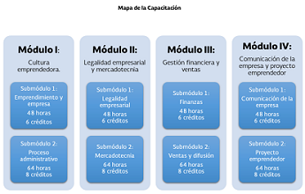
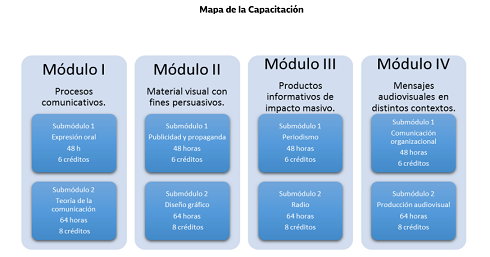
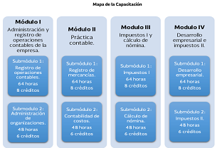
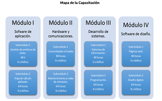
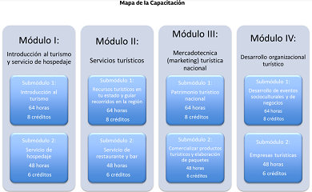

Administración

Permite al alumnado representar la realidad de su entorno social, para transformarla mediante la apropiacion d conocimientos, el descubrimientos de significados, la generación de ideas y trasnmitirlas eficazmente.
Su propósito es proporcionar herramientas y favorecer el desarrollo de habilidades y actitudes para que el estudiantado estructure proyectos, sustentables, viables y factibles en el contexto en el que vive con una visión emprendedora.
Los egresados de esta capacitación se puedes egresar a la vida laboral tanto en institucuciones públicas como privadas en los siguientes perfiles ocupacionales: auxiliar administrativo, asistente de investigación, ecuesta-entrevista,ventas y servicios financieros, analista de relaciones públicas y comunicación.
Comunicación

Desarrolla conocimientos y habilidades para analizar elaborar y diseñar mensajes utilizando la radio, y la televisión, los impresos entre otros medios partiendo de la base del proceso comunicativo para estructurar planes de promocion integrales.
Permite que el estudiantado logre integrarse o vincularse de manera inmediata en el contexto en el que se desarrolle.
Su propósito es descubrir habilidades comunicativas de forma informada y asertiva para concretar productos diversos como: textos, discursos, gráficos y audiovisuales innovadores con impacto masivo que alcancen las expectativas de un posible cliente u organización y contemplen las necesidades de su contexto.
Contabilidad

Su propósito es desarrollar las competencias y habilidades prácticas que permitan de forma ética y responsable aplicar el proceso contable y administrativo para el uso de la información financiera, la cual debe ser veraz, confiable y oportuna para la toma de decisiones en beneficio de la entidad y el sector económico en el que se desarrolle.
Favorece en el estudiantado un análisis crítico con visión emprendedora sobre los factores y aspectos fundamentales que intervienen en la productividad y competitividad de una organización y su relación con el entorno socioeconómico.
Tecnologías de la información y la comunicación

Desarrolla en el estudiantado las habilidades comunicativas, verbales y no verbales para expresarse a través de diversos códigos y herramientas del lenguaje a través de las diferentes tecnologías de la información. Por otra parte, las Tecnologías de la Información y Comunicación se vinculan de manera interdisciplinar tanto con el campo de Matemáticas como con el de Comunicación, ya que aportan los elementos para la resolución de problemas mediante los algoritmos y la programación.
Su propósito es desarrollar la capacidad para proponer soluciones a problemas del contexto laboral y escolar, mediante la aplicación de las Tecnologías de la Información y de la Comunicación, de forma creativa e innovadora, con una postura ética y responsable como ciudadano digital.
Turismo

Promueve el desarrollo de habilidades fundamentales del sector social-productivo, tales como: el liderazgo, la innovación, el autoaprendizaje, la comunicación asertiva en distintos contextos, la integración efectiva de equipos de trabajo y la creatividad al brindar servicios de manera sustentable.
Su propósito es valorar la relevancia del domino de las habilidades de comunicación en inglés en el sector turístico, implementando técnicas y procesos de comunicación del discurso lingüístico en inglés en un marco nacional, para solventar los requerimientos del turista al brindar servicios turísticos de calidad mediante una comunicación empática y asertiva, respetando el medio ambiente y el marco legal vigente, en los diversos contextos turísticos de su entidad.